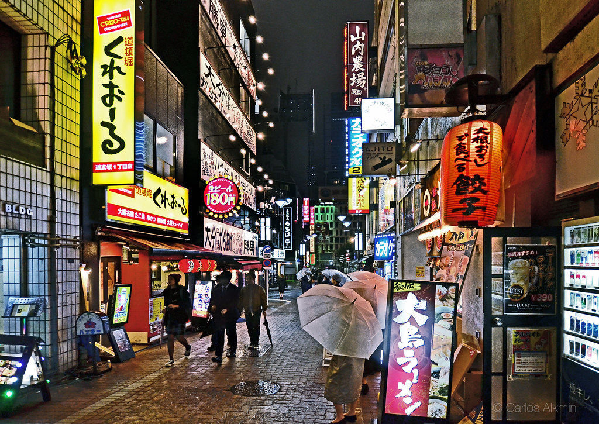
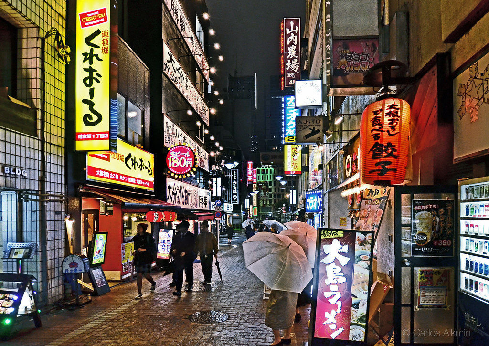
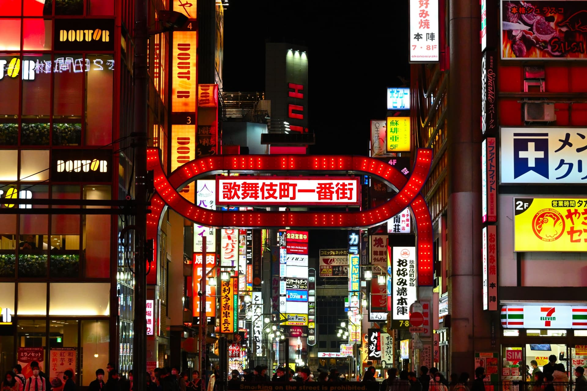
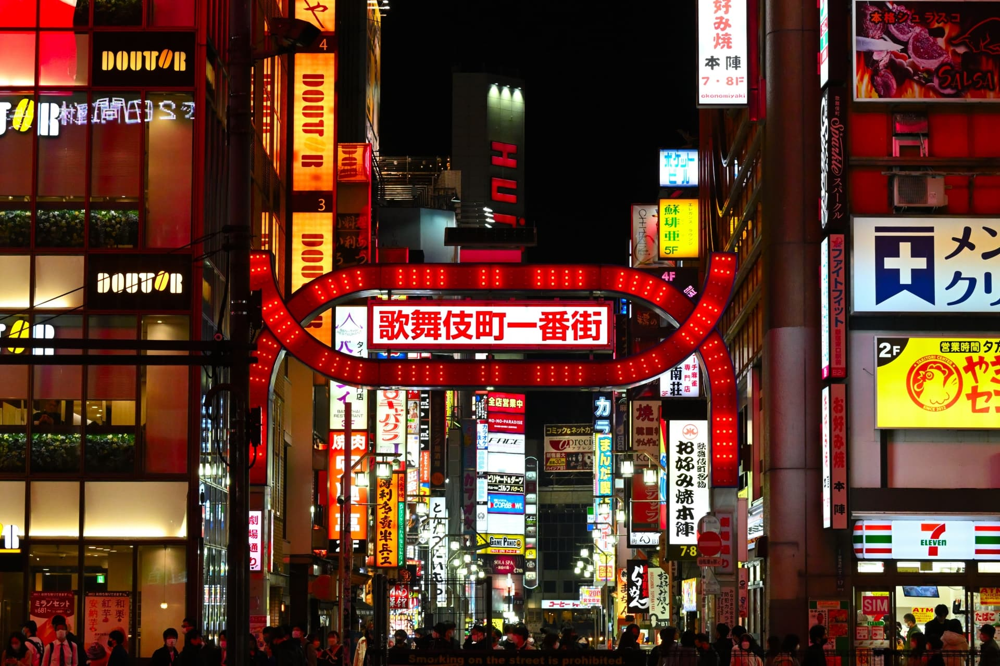

Tokio es la capital de Japón. Una enorme ciudad de más de 13 millones de habitantes formada por 23 "distritos especiales" (pueblos y ciudades cercanos y que acabaron siendo absorbidos por el crecimiento urbano). Además, las islas de Izu y Ogasawara forman parte también de Tokio.
Este centro, conocido internacionalmente como "ciudad de Tokio", es solo un tercio de la megalópolis de Tokio, un área metropolitana con más de 37 millones de habitantes, la mayor concentración urbana del mundo. Es quizás la ciudad más turística, bonita y popular de Japón, por lo que es importante saber todo lo que se puede ver y hacer allí.
Su enorme "ritmo frenético" fascina a quienes la visitan, ya que cuenta con una historia fascinante, festividades, gastronomía de fama mundial, cultura, tiendas, rascacielos, museos, parques, etc.
Sin duda una ciudad increíble que ofrece algo para todos y que creo que se debe visitar al menos una vez en la vida.
Hoy en día, Tokio ofrece a sus visitantes una variedad prácticamente ilimitada de entretenimiento, cultura, gastronomía y compras. De hecho, cuenta con la mayor concentración de museos, teatros, establecimientos comerciales y de entretenimiento de todo Japón.
Shibuya es uno de los barrios más famosos de la ciudad y otro de los lugares que visitar en Tokio más imprescindibles. Merece la pena recorrerlo tanto de día, con sus tiendas y restaurantes de todo tipo, como de noche, momento en que la presencia de las luces de neón, discotecas y atracciones sorprendentes, harán que pierdas la noción del tiempo.
Aunque no vengas precisamente de compras a Tokio, no dejes de entrar en el centro comercial Shibuya 109, todo un espectáculo para los sentidos o entrar en algún centro comercial, que es como entrar en otro mundo.
Además de esto, no dejes de cruzar el paso de peatones más famoso del mundo, sobre todo desde la zona en la que tienes el Starbucks enfrente, o acercarte a la estatua del fiel perro Hachiko. Un mirador espectacular del cruce de peatones y que han abierto hace poco, está situado en la terraza del edificio Magnet. Una forma divertida de pasar por este cruce es reservar este recorrido en kart simulando el juego de Super Mario Bros.
Una vez hayas conocido Shibuya, cerca de la zona más bulliciosa del barrio, se encuentra Dongenzaka, la Colina de los Love Hotels, hoteles que ofrecen habitaciones temáticas por horas para encuentros esporádicos o para hacer realidad alguna de tus fantasías. Y aunque no vayas a alojarte en ninguno de ellos, la decoración y arquitectura exterior de los hoteles lleno de neones, merecen de por si una visita.
Además para llegar a la céntrica estación de Shibuya puedes utilizar el JR Pass para las líneas Yamanote, Saikyo, Shonan Shinjuku o utilizar el metro.

 
La mayoría de lugares que visitar en Tokio se concentran alrededor de las estaciones de tren, como también es el caso del barrio de Shinjuku.
En esta zona rodeada de grandes rascacielos se sitúa la parte administrativa de la ciudad, con el edificio del Gobierno Metropolitano de Tokio, y grandes hoteles como el Park Hyatt Tokyo, que tuvo un especial protagonismo en la película Lost in Translation.
Cerca de la estación también se encuentra una zona de ocio que compite con Akihabara en número de neones y tiendas de electrónica donde encontrarás desde salas recreativos como el típico Pachinko a edificios de varios pisos de karaokes, además de enormes centros comerciales y restaurantes de todo tipo.
Si estás en esta zona con la puesta de sol, una ruta interesante de noche por el barrio, incluiría el barrio rojo de Tokio, conocido como Kabukicho, y los callejones Omoide Yokocho y Golden Gai.
Y si en algún momento acabas un tanto estresado, un buen lugar para desconectar del bullicio de gente y ruido de Shinjuku, es el bonito Parque Shinjuku Gyoen, donde podrás descansar antes de seguir con la ruta.
Para llegar a la estación de Shinjuku, la más transitada del mundo, puedes coger las líneas Yamanote, Chuo, Saikyo, Shonan-Shinjuku, Keihin-Tohoku (incluidas en el JR Pass) o las líneas de metro Seibu, Higashi, Nishi y Oedi.
 
 
Sensoji, el templo más antiguo de la ciudad, es otro de los lugares que ver en Tokio imprescindibles.
La mejor forma para entrar en este templo budista, situado en el barrio de Asakusa, es cruzar su impresionante puerta Kaminarimon, en la que destaca un enorme farolillo de color rojo y unas estatuas de dioses a cada lado, que la han convertido en una de las fotos típicas de la ciudad.
Algo a tener en cuenta es que suele haber mucha gente, por lo que te recomendamos llegar muy pronto si no quieres verte rodeado de una multitud.
En el interior del Templo Sensoji destaca la bonita pagoda de cinco pisos y el salón principal Hondo, además de varios salones, santuarios, campanas, puertas, templos, estatuas y un jardín que harán las delicias de todo viajero.
Junto al templo, entre las puertas Kaminarimon y Hozomon se encuentra la calle Nakamise, una de las calles comerciales más antiguas de todo Japón, en la que puedes disfrutar de un agradable paseo por sus 250 metros de calle y más de 90 tiendas, que te mostrarán todo el abanico de sourvenirs que puedes llevarte de recuerdo de tu viaje.
Para llegar a la parada de la estación de Asakusa, situada cerca del templo, puedes coger la línea JR Yamanote desde la estación de Tokio o la JR Chuo desde la de Shinjiku (incluidas en el JR Pass). Tienes que hacer transbordo en la estación de Kanda para pasar a la línea de metro de Ginza. Otra opción es coger el water bus de la línea Sumida River.
Horario de visita del salón principal: todos los días de 6h a 17h, el resto del templo está siempre abierto.


Tokio es la ciudad con más Estrellas Michelin del mundo, lo cual da una idea de la dimensión gastronómica del lugar. Además, gracias a que Tokio es la capital de Japón, es posible descubrir muchas especialidades culinarias de otras regiones del país. De ese modo, se pueden disfrutar los platos más populares de Japón sin salir de Tokio.
Los restaurantes más conocidos son las "Izakaya". Habitualmente traducimos el término "izakaya" como "taberna japonesa" aunque en realidad se trata de lo que en España se denominan "bares de tapas": locales en los que se puede elegir una amplia variedad de bebidas y donde se ofrecen un número (en ocasiones muy amplio) de platos con recetas muy diversas.


Son el establecimiento gastronómico por excelencia en Japón, donde también se puede ir solo a beber (aunque no es muy habitual) y donde principalmente se socializa (entre empleados de una empresa y su jefe, grupos de amigos, familias e incluso grupos de estudiantes universitarios).
Además, generalmente las izakayas abren al atardecer y por la noche.
Las ventajas que presentan las izakayas son varias:
Fijar Tokio como base es una muy buena estrategia ya que permite realizar excursiones a numerosos lugares de interés de los alrededores. A eso hay que añadir que, al tratarse de una ciudad inmensa, cuenta con un número casi infinito de alojamientos de todos los precios, calidades y características.
La contrapartida a esa inmensa oferta de alojamientos es su ubicación, pues una mala elección basada solo en el precio puede hacer que pierdas mucho tiempo (y dinero) cada día en desplazamientos.
Para que puedas elegir la ubicación más adecuada de los mejores alojamientos en Tokio le ofrecemos los siguientes: